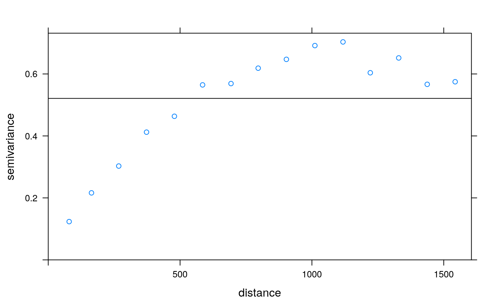

vgm.panel.RdVariogram plots contain symbols and lines; more control over them can be gained by writing your own panel functions, or extending the ones described here; see examples.
vgm.panel.xyplot(x, y, subscripts, type = "p", pch = plot.symbol$pch, col, col.line = plot.line$col, col.symbol = plot.symbol$col, lty = plot.line$lty, cex = plot.symbol$cex, ids, lwd = plot.line$lwd, model = model, direction = direction, labels, shift = shift, mode = mode, ...) panel.pointPairs(x, y, type = "p", pch = plot.symbol$pch, col, col.line = plot.line$col, col.symbol = plot.symbol$col, lty = plot.line$lty, cex = plot.symbol$cex, lwd = plot.line$lwd, pairs = pairs, line.pch = line.pch, ...)
| x | x coordinates of points in this panel |
|---|---|
| y | y coordinates of points in this panel |
| subscripts | subscripts of points in this panel |
| type | plot type: "l" for connected lines |
| pch | plotting symbol |
| col | symbol and line color (if set) |
| col.line | line color |
| col.symbol | symbol color |
| lty | line type for variogram model |
| cex | symbol size |
| ids | gstat model ids |
| lwd | line width |
| model | variogram model |
| direction | direction vector |
| labels | labels to plot next to points |
| shift | amount to shift the label right of the symbol |
| mode | to be set by calling function only |
| line.pch | symbol type to be used for point of selected point pairs, e.g. to highlight point pairs with distance close to zero |
| pairs | two-column matrix with pair indexes to be highlighted |
| ... | parameters that get passed to lpoints |
ignored; the enclosing function returns a plot of class trellis
library(sp) data(meuse) coordinates(meuse) <- c("x", "y") library(lattice) mypanel = function(x,y,...) { vgm.panel.xyplot(x,y,...) panel.abline(h=var(log(meuse$zinc)), color = 'red') } plot(variogram(log(zinc)~1,meuse), panel = mypanel)